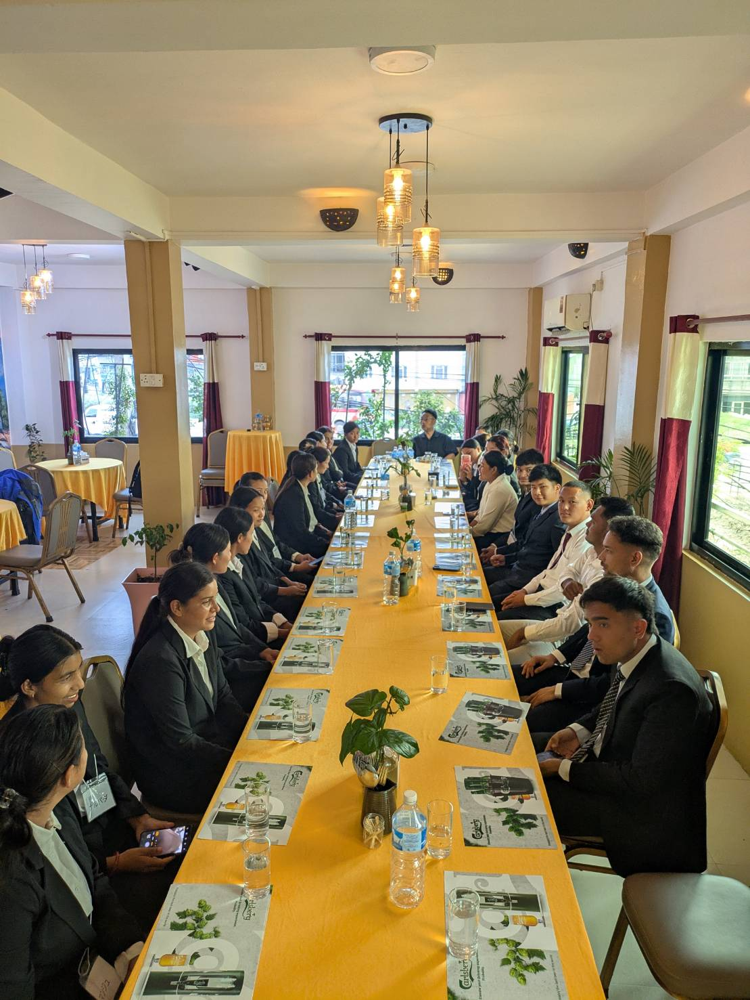
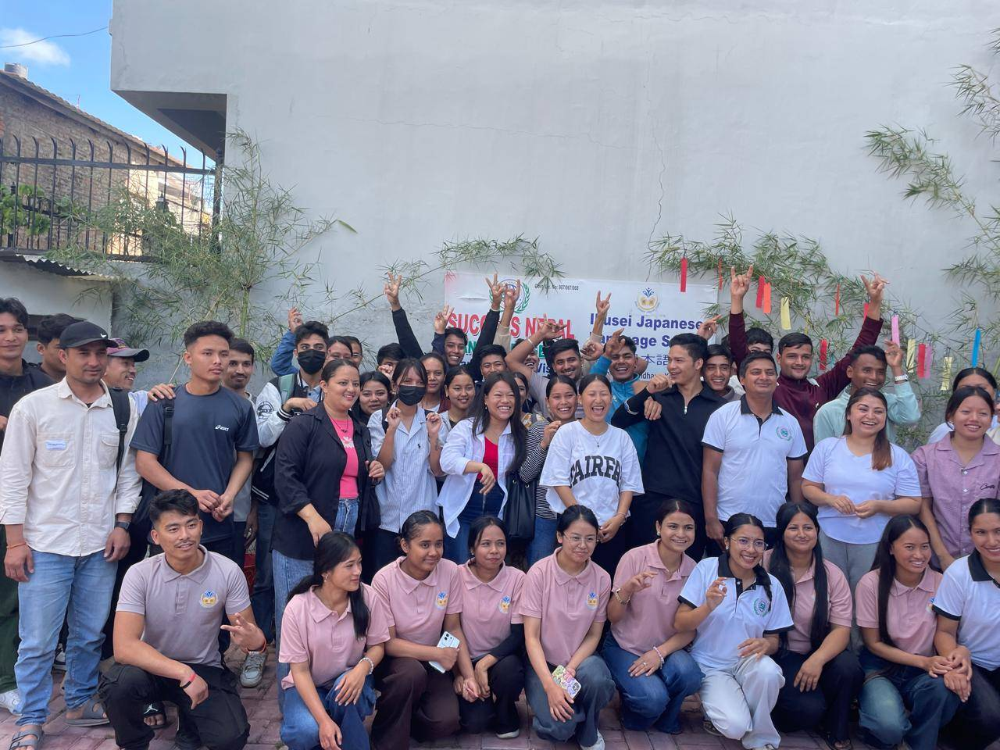
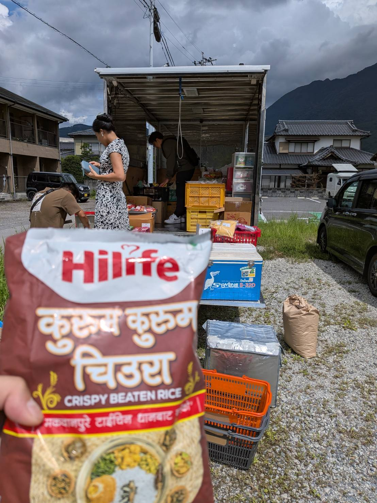

導入事例
採用企業様のリアルな声と、定着の記録
導入事例一覧

写真：外国人スタッフが活躍する介護現場「採用から3年、誰も辞めていません。」
大阪府 介護老人保健施設
「以前は毎年採用しては1年以内に辞めていく繰り返しでした。げんき大阪さんに頼んで3名を採用し、3年が経ちますが、全員が今も現場で活躍しています。住まいの手配まで一緒にやってくれたのが大きかったと思います。」
3年在籍継続中
3名採用人数
0件早期退職

写真：飲食店で活躍する外国人スタッフ「言葉の壁は予想より小さかった。」
大阪市 飲食チェーン
「正直、コミュニケーションが取れるか不安でした。でも、げんき大阪さんがいつも間に入って通訳してくれるし、入社してから1ヶ月も経たないうちに日本人スタッフとも打ち解けていました。今では頼りになる戦力です。」
5名採用人数
1ヶ月現場定着目安
3店舗配置先

写真：農場で活躍する外国人スタッフ「繁忙期だけでなく、通年で戦力になっています。」
大阪近郊 農業法人
「季節労働だけを想定していましたが、通年雇用のプランを提案してもらい、年間を通じて安定した人員を確保できています。車の手配まで全部やってくれたので、うちのスタッフは農場に集中できています。」
2名採用人数
通年雇用形態
車両げんき手配